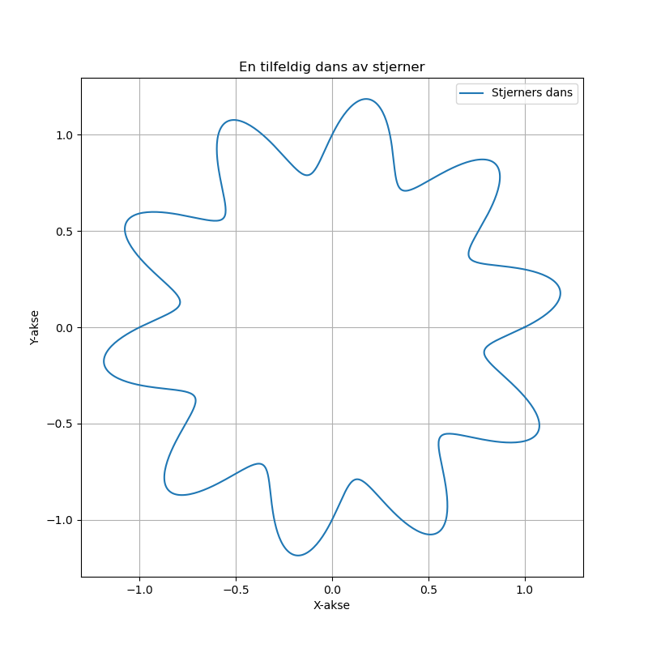

Dagens dikt
I mørket lyser stjerners dans,
som små prikker i kaosets sans.
Rundt en sirkel, kanskje en bølge,
tilfeldighet skriker, "vil du følge?"

Kode
import numpy as np
import matplotlib.pyplot as plt
# Diktets matematiske representasjon
# Sirkelens dans med bølger og tilfeldighet
theta = np.linspace(0, 2 * np.pi, 1000) # Vinkelverdier for sirkel
radius = 1 + 0.2 * np.sin(10 * theta) # Kombinasjon av bølger og tilfeldighet
x = radius * np.cos(theta) # X-verdi
y = radius * np.sin(theta) # Y-verdi
# Plotting
plt.figure(figsize=(8, 8))
plt.plot(x, y, label="Stjerners dans") # Plot 'dans'
plt.title("En tilfeldig dans av stjerner")
plt.xlabel("X-akse")
plt.ylabel("Y-akse")
plt.legend()
plt.axis("equal") # Lik skala for sirkelutseende
plt.grid(True)
plt.savefig('2025-03-20-19-52-51.png')